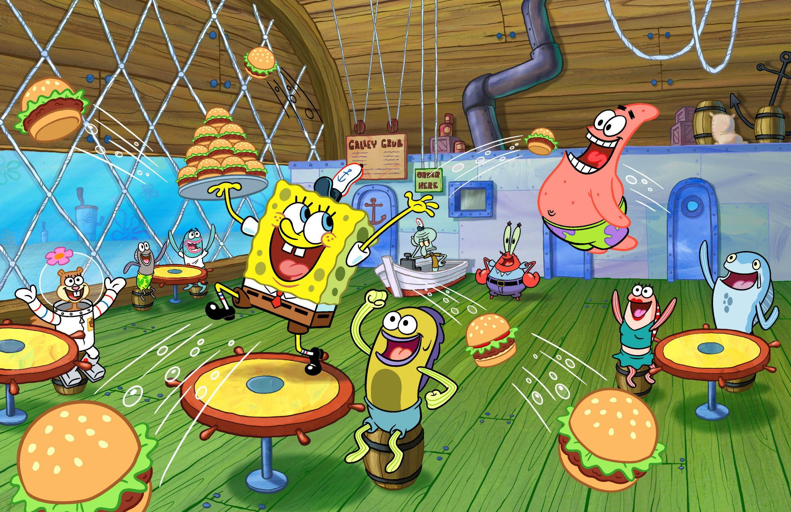
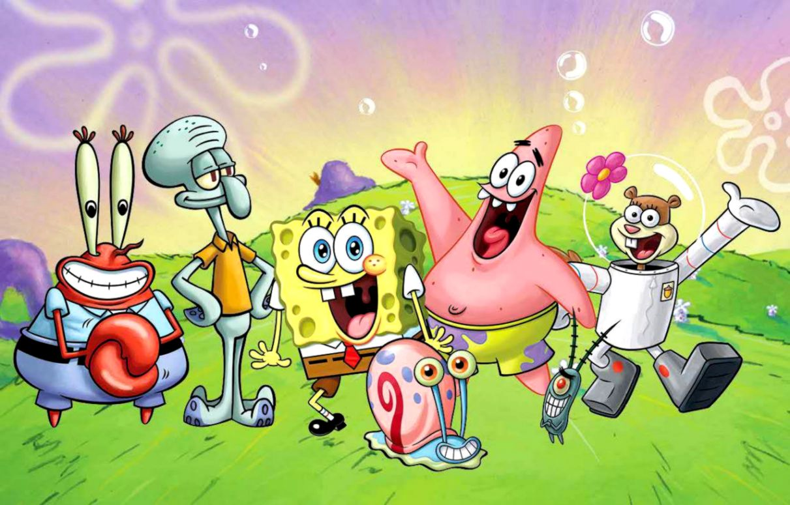

About SpongeBob SquarePants
SpongeBob SquarePants is a sea sponge who works as a fry cook at the Krusty Krab, a fast food restaurant known for its siganture burger, the Krabby Patty.
SpongeBob's Characteristics
- He's optimistic.
- He has a childlike attitude.
SpongeBob's Friends
SpongeBob and his friends
SpongeBob has funny and awesome friends. But the ones that will always come first and funniest will be the ones he has had with his best friend Patrick. Click on the links below to read more about them: